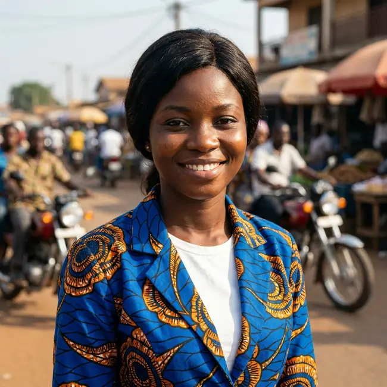
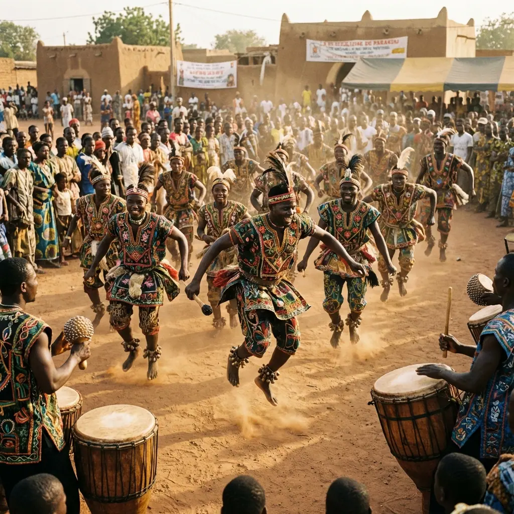
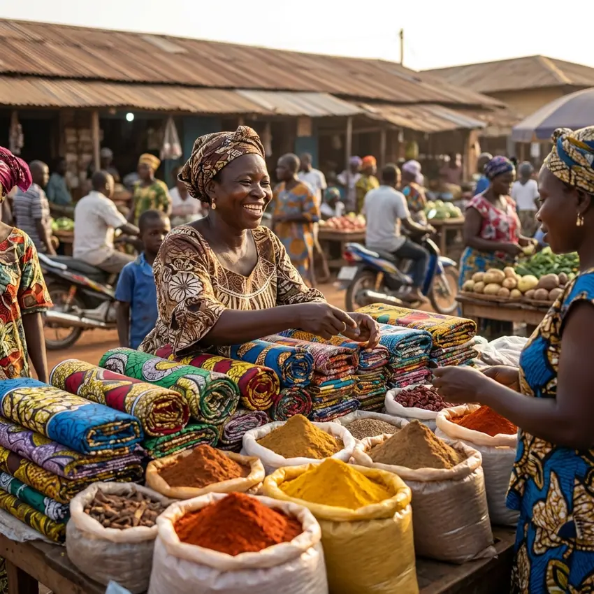
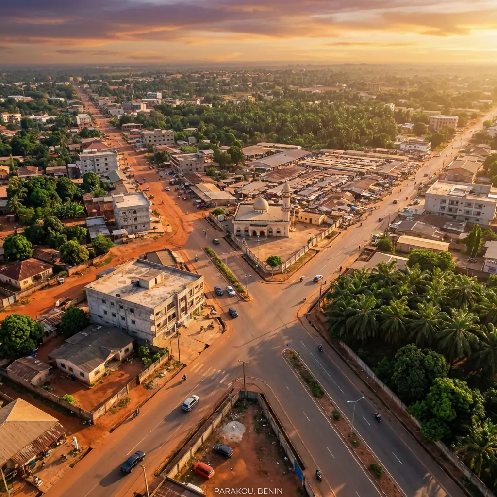
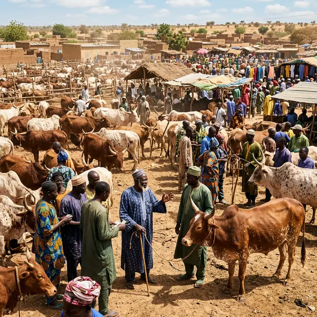

L'EXCELLENCE HUMAINE
DE PARAKOU
Parakou, une ville où les génies locaux s'éveillent, innovent et rayonnent. Au cœur du Borgou, la richesse de Parakou réside avant tout dans le potentiel et la détermination de ses habitants. Son dynamisme se découvre à travers les gestes précis de ses maîtres artisans, l'audace de ses jeunes entrepreneurs, l'inspiration de ses artistes et la rigueur de ses sportifs.
Des ateliers traditionnels aux initiatives numériques modernes, chaque parcours témoigne d'une volonté de bâtir, de transmettre et de faire briller la cité des Kobourou. Explorez les visages d'une ville en mouvement, portée par la passion de ses créateurs, l'ingéniosité de sa jeunesse et l'excellence de ses acteurs locaux.
Une terre de génies et d'initiatives
Plusieurs disciplines, une même passion pour l'excellence
Parakou est un vivier de compétences. Portée par une jeunesse créative et des détenteurs de savoir-faire séculaires, la ville voit éclore chaque jour des initiatives remarquables dans tous les secteurs d'activité.
Artisans, créateurs de contenu, développeurs, stylistes, musiciens, agro-entrepreneurs et athlètes participent à cette effervescence humaine et professionnelle. Leurs réalisations, leurs projets et leurs engagements contribuent à transformer le quotidien de la cité.
Cette vitalité se manifeste aussi bien dans la préservation des métiers d'art hérités des générations passées que dans l'adoption des technologies et des nouveaux modèles économiques.
À Parakou, le talent ne se limite pas à une simple aptitude individuelle. Il devient un moteur de développement collectif, une source d'inspiration pour la jeunesse et un levier de rayonnement pour tout le nord du Bénin.

Les Visages de l'Excellence
Montage dynamique présentant le quotidien, les ateliers et les victoires des créateurs et sportifs de Parakou.
Des domaines qui font rayonner la cité
Le talent prend forme dans les ateliers, les studios et sur le terrain. Les talents de Parakou s'expriment à travers une multitude de disciplines qui façonnent l'identité économique, artistique et sportive de la commune.

Artisanat et métiers d'art
Héritiers d'un savoir-faire précieux, les artisans de Parakou transforment les matières locales avec patience et maîtrise. Poterie, tissage traditionnel, sculpture sur bois, forge, bijouterie et maroquinerie témoignent d'une technicité transmise au fil du temps.
À travers leurs œuvres utilitaires ou décoratives, ces mains d'or perpétuent l'authenticité du Borgou tout en adaptant leurs créations aux goûts contemporains.

Entrepreneuriat et innovation
La jeunesse parakoise relève les défis de demain grâce à l'esprit d'entreprise et à l'innovation. Transformation agroalimentaire, solutions numériques, énergies renouvelables, commerce et services modernes : de nombreux porteurs de projets bâtissent des entreprises locales à fort impact.
Par leur audace et leur créativité, ces entrepreneurs valorisent les ressources du terroir et créent des opportunités durables pour la ville.
Arts, musique et création visuelle
La scène artistique de Parakou vibre au rythme de ses créateurs. Musiciens, chanteurs, slameurs, peintres, stylistes, photographes et danseurs puisent dans l'héritage culturel du territoire pour proposer des œuvres originales et engagées.
Leurs créations offrent un regard sensible sur la société, célèbrent l'identité locale et font résonner la voix de la cité des Kobourou bien au-delà de ses frontières.

Sport et dépassement de soi
Sur les pistes, les terrains et les tatamis, les sportifs de Parakou incarnent les valeurs de discipline, d'endurance et de solidarité. Athlétisme, football, basketball, arts martiaux et sports collectifs révèlent des athlètes déterminés.
Ils portent haut les couleurs de la commune lors des compétitions nationales et internationales, inspirant chaque jour la nouvelle génération sportive.
Portraits et chroniques de terrain
À la rencontre de celles et ceux qui font bouger Parakou. Derrière chaque réussite se cache une histoire faite de travail, de passion et de persévérance.

Bio SIKA
Détenteur d'un savoir-faire artisanal remarquable, il façonne des pièces uniques qui valorisent les matières premières et les traditions esthétiques du Borgou.
Arafath IMOROU
Engagé dans la modernisation de l'économie locale, il développe des solutions innovantes pour valoriser les produits du terroir et accompagner la jeunesse parakoise.
Président DJANGOUN
À travers ses créations originales inspirées des rythmes et réalités du Nord-Bénin, cet artiste fait rayonner la scène culturelle contemporaine de Parakou.
Chams-Deen KOROKO
Porté par la rigueur et l'esprit de compétition, il défend avec fierté les couleurs de Parakou et inspire la relève sportive de la commune sur les circuits nationaux.
Annuaire des talents de la Cité
Filtrez les profils enregistrés dans notre répertoire territorial en temps réel.
Chargement des talents...
Des espaces pour apprendre, créer et entreprendre
L'éclosion des talents s'appuie sur des lieux de formation, d'échange et d'expression présents au cœur de la ville. À Parakou, les centres culturels et artistiques, les instituts de formation supérieure, les espaces d'incubation numérique, les ateliers artisanaux et les infrastructures sportives offrent aux jeunes et aux créateurs un cadre propice pour développer leurs compétences.

Faire rayonner les talents ensemble
Chaque parcours mérite d'être mis en lumière.Un artisan aux mains d'or, un jeune entrepreneur innovant, un artiste inspiré, un sportif prometteur ou une initiative portée par la jeunesse : les richesses humaines de Parakou se trouvent dans tous les quartiers de la commune.
Explore Parakou souhaite contribuer à leur valorisation en offrant une vitrine de visibilité aux acteurs qui participent au dynamisme et à la fierté de la cité des Kobourou.
Partagez votre parcours et contribuez à faire découvrir les visages qui font briller Parakou.